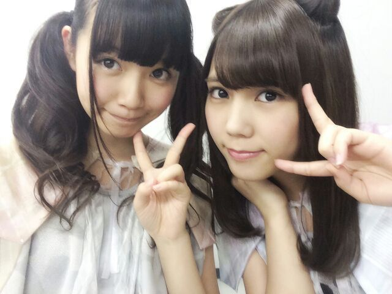

| 2014/07 08 Tue | ひめたん-OoO-その457 |

いよいよあさって7月9日
9thシングル「夏のFree&Easy」
発売になります♪
乃木坂大好き愛してるーって方は
ぜひ全タイプ制覇していただきたいなって
思ったりしつつ、
ひめたん大好きひめたんしか見えないよー
ってあ・な・た・に・は(〃ω〃)
Type-C盤がおすすめです◎
アンダー楽曲も、ひめたん個人PVも
Type-Cに収録されているということは
まあ簡潔に言っちゃうと
ひめたんはType-Cにしかいないので(笑)
ごめん言葉選べない(笑)
Type-Cはマストで♪♪
よろしくお願いしますっ◎
あっお仕事のお話でもしようかな
乃木ののは聴いていただけてますか？
前回は
あしゅりん (齋藤飛鳥ちゃん)
らりん (永島聖羅ちゃん)でした☆
らりんあしゅりん
なんだろうこの語感の良さ。
らりんあしゅりんらりんあしゅりん......
まあなんてゆーか
いろいろとごめんなさい！
新人MC、下手くそなのもご愛嬌(´っ^ω^ｃ`)てへ
......ごめんなさい(´っ^ω^ｃ`)
番組のお便りたくさんお待ちしてますよー
次回もお楽しみに☆
そして、乃木坂46SHOW！
収録してきましたヾ(＠⌒ー⌒＠)ノ
オンエアはちょっと先なのですが
また近くなったらお知らせするから
ぜひチェックしてねー♪

明日もお仕事がんばるぞ(＾ω＾)

詳しいことは
次回の日記で報告できるかなー？
最近お仕事が充実してて幸せ♪♪
アンダーライブのリハも始まったよ！

 ひめたんが好きなパスタ(スパゲッティ)は
ひめたんが好きなパスタ(スパゲッティ)は
なんですか？
基本的には和風のあっさりしたのが好みかなー
ミートソースも好きですよー
クリーム系もたまには食べたくなるけど
普段あんまし頼まないかなって感じ。
突然なんだけど 、 ひめちゃんは
コンビニに行ったらつい買っちゃう
物とかありますか？
マスクかなー。
愛未とあすかりんとコンビニで
何買うー何買うー何買うーって
うだうだうだうだする時間はちょっと幸せ◎
ひめたんに質問です！
僕になにか質問ありますか？
ないです(笑)
あーごめんごめん( >_< )
じゃあ！はい質問です！みんなも答えて！
今日は七夕です。
今日のみんなの夜ごはんは何でしたか？
深夜にアンダー曲のMV見ない方がいいって
言ってたけど
無視して見たらお腹が空いたんですが
どうしましょう？
メール読んでくれたのかな？
ありがと(＊^ω^＊)
で、なんで無視したの？忠告したでしょ？
おこ！ひめたんおこ！ひめたんごぱーんち！
ひめたんハガキ応募の
「消印有効」の意味わかる？
わかるよ！
例えば「7日消印有効」なら、
7日にポストに入れるのはセーフなんだよね
「7日締切」なら6日までにポストに投函。どや
基本チョキしかだせないバルタン星人が
ジャンケンに勝つには
どうしたらいいと思いますか？
もうねーじゃんけんしてる時点で
勝つ気ないと思う。
じゃんけんしてるバルタン星人なんか見たくない！
バルタン星人ならびーーむとかしゅわっちッとか
何かできるんじゃないの(゜゜)？
現在ひめたんを応援したくなってるけど、
あまり応援する人増やすと
今まで応援してきたメンバーに
失礼な気がして悩んでます。
ひめたんこの状況どうしましょうか？
失礼とかないよ( ^ω^ )！
大丈夫！それで推しメンちゃんに怒られたら
ひめたんのせいにしていいから
あなたもひめきゅんさんになっちゃいなよ！
きゅんきゅん王国はフリーな国♪楽しい国ー♪
ひめたんが可愛すぎるので
リスペクトしてもいいですか？
かわいくないですけども
嬉しい (丿^ω^ヽ)ありがとうっ
ひめたんの日記の
コメント欄下２ケタに46を踏んだ方へ
手書きでコメ返するコーナー
＼ ひめたん46 ／

暗いけど気にせんでー(´・ω・｀)
ごめんよー
いつもたくさんのコメント
ありがとうございます
前回あんまし質問返し出来なかったぶん
今日はちょっと多めなのです(＊´ω`＊)
そうやってみなさんのコメントが
ひめたんの日記を
作っていってくれるんだよー☆
(＊´・ω・＊)
コメント(548)
2014/07/08 00:00